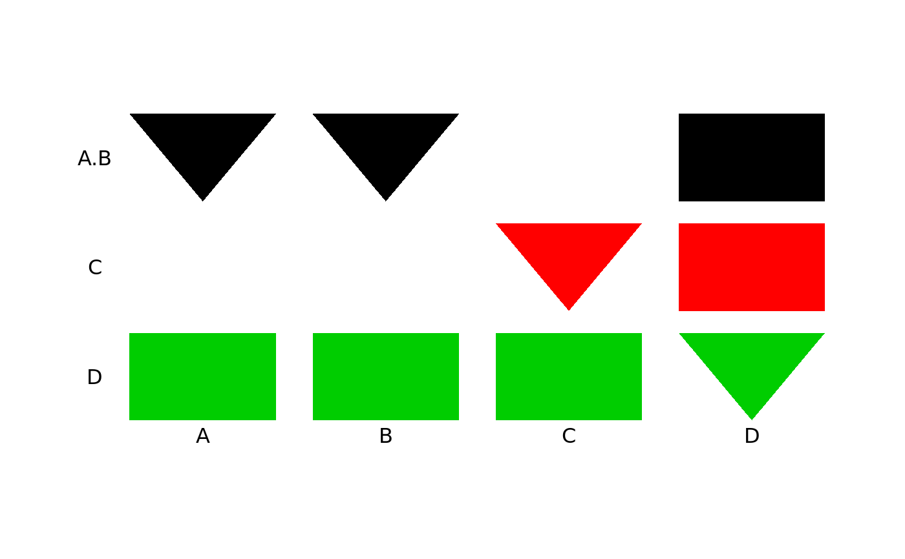

plot.multcompTs.RdPlot graphic(s) for multcompTs or multcompLetters objects
# S3 method for multcompTs plot( x, horizontal = FALSE, col = 1:6, type = c("Ts", "boxes"), orientation = c("standard", "reverse"), add = FALSE, at, width, fig = c(0, 1, 0, 1), lwd = 3, label.levels = if (add) NA else 0.05, label.groups = NA, T.base = 0.4, ... )
| x | an object of class 'multcompTs' or 'multcompLetters'. |
|---|---|
| horizontal | A logical scalar indicating whether the list of items compared reads left to right (horizontal = TRUE) or top to bottom (horizontal = FALSE). If this multcomp graphic accompanies boxplots for different levels or groups compared, the 'boxplot' argument 'horizontal' is the negation of the multcomp plot 'horizontal' argument. |
| col | The color for each group of items or factor levels. The colors
will cross the different items or factor levels and will therefore have the
orientation specified via 'horizontal'. If the number of columns exceeds
length(col), col is recycled. For alternative choices for col, see "Color
Specification" in the |
| type | An alternative display for either multcompTs or multcompLetters is 'boxes' (or rectangles). If type="boxes" with "multcompTs", the "base(s)" of each "T" will be indicated by a triangle. |
| orientation | The "standard" orientation has the 'multcompTs' pointing towards the names of the items or factor levels; with the "reverse" orientation, the bases of the "Ts" point away. By default, the names are on the left or below unless the mean of the relevant 'fig' range is less than 0.5. |
| add | TRUE to add to an existing plot; FALSE to start a new plot. The names of the factor levels or items compared will be plotted only if add=FALSE. |
| at | A numeric vector or matrix or a list with components "at" and "width". If a list, both components must be either a numeric vector or matrix. The numeric vector "at" (whether the function argument or "at" component of the "at" list) must be either a numeric vector or matrix giving the locations where the "Ts" or "Letters" graphics should be drawn. length(at) is 1, 2 or 3 times the number of the number of factor levels or items compared. If length(at) is twice the number of levels or items compared, it gives the range of the display for that level; the base of a "T" will be at the midpoint. If length(at) is three times the number of items compared, the intermediate number will be the center of the base of the "T". |
| width | A numeric vector or matrix with as many rows as "Ts" or "groups" and with up to three columns. With one column, it will be the "center" of the plot range for that group. With two columns, they will delimit the range. With three, they will provide "bottom", "center", and "top" of the range for that set of grouping indicators. If "at" is a list, the argument "width" is ignored and is taken from the list "at". |
| fig | A numerical vector of the form 'c(x1, x2, y1, y2)' giving the
coordinates of the figure region in the display region of the plot device,
as described on the |
| lwd | width of line to connect elements of "T" graphics that might not otherwise be connected. |
| label.levels | NA for no labels or distance away from the plot for the labels as a proportion of the plot range. |
| label.groups | NA for no labels or distance away from the plot for the labels as a proportion of the plot range. |
| T.base | A numeric scalar giving the proportion of the available space devoted to the base of the Ts; used only when type="Ts". |
| ... | graphical parameters can be given as described on the
|
A list with two components:
A matrix with three columns giving the middle and extremes of the display for each of the factor levels or items compared.
A matrix with as many rows as "Ts" or comparitor levels and with two columns giving the plot range for that comparitor level.
The requested graphic is either plotted by itself or added to an existing plot as specified by the arguments. The placement can be controlled by 'fig' and 'at'.
The fontsize and fontface of a plot of a multcompLetters object with 'type =
"Letters"' can be adjusted as describe on the gpar help
page.
multcompTs multcompLetters
multcompBoxplot gpar
## ## plot(multcompTs(...)) ## dif4 <- c(.1, .02, .03, 1) names(dif4) <- c("A-B", "A-C", "B-C", "A-D") (mcT4 <- multcompTs(dif4))#> A.B C D #> A 1 -1 0 #> B 1 -1 0 #> C -1 1 0 #> D 0 0 1 #> attr(,"class") #> [1] "multcompTs"#> $at #> bottom center top #> A 3.6 4 4.4 #> B 2.6 3 3.4 #> C 1.6 2 2.4 #> D 0.6 1 1.4 #> #> $width #> bottom center top #> A.B 0.6 1 1.4 #> C 1.6 2 2.4 #> D 2.6 3 3.4 #>#> $at #> bottom center top #> A 3.6 4 4.4 #> B 2.6 3 3.4 #> C 1.6 2 2.4 #> D 0.6 1 1.4 #> #> $width #> bottom center top #> A.B 0.6 1 1.4 #> C 1.6 2 2.4 #> D 2.6 3 3.4 #>#> $at #> bottom center top #> A 3.6 4 4.4 #> B 2.6 3 3.4 #> C 1.6 2 2.4 #> D 0.6 1 1.4 #> #> $width #> bottom center top #> A.B 0.6 1 1.4 #> C 1.6 2 2.4 #> D 2.6 3 3.4 #>#> $at #> bottom center top #> A 0.6 1 1.4 #> B 1.6 2 2.4 #> C 2.6 3 3.4 #> D 3.6 4 4.4 #> #> $width #> bottom center top #> A.B 2.6 3 3.4 #> C 1.6 2 2.4 #> D 0.6 1 1.4 #>#> $at #> bottom center top #> A 0.6 1 1.4 #> B 1.6 2 2.4 #> C 2.6 3 3.4 #> D 3.6 4 4.4 #> #> $width #> bottom center top #> A.B 2.6 3 3.4 #> C 1.6 2 2.4 #> D 0.6 1 1.4 #>#> $at #> bottom center top #> A 3.6 4 4.4 #> B 2.6 3 3.4 #> C 1.6 2 2.4 #> D 0.6 1 1.4 #> #> $width #> bottom center top #> A.B 0.6 1 1.4 #> C 1.6 2 2.4 #> D 2.6 3 3.4 #>#> $at #> bottom center top #> A 3.6 4 4.4 #> B 2.6 3 3.4 #> C 1.6 2 2.4 #> D 0.6 1 1.4 #> #> $width #> bottom center top #> A.B 0.6 1 1.4 #> C 1.6 2 2.4 #> D 2.6 3 3.4 #>#> $at #> bottom center top #> A 0.6 1 1.4 #> B 1.6 2 2.4 #> C 2.6 3 3.4 #> D 3.6 4 4.4 #> #> $width #> bottom center top #> A.B 2.6 3 3.4 #> C 1.6 2 2.4 #> D 0.6 1 1.4 #>#> $at #> bottom center top #> A 0.6 1 1.4 #> B 1.6 2 2.4 #> C 2.6 3 3.4 #> D 3.6 4 4.4 #> #> $width #> bottom center top #> A.B 2.6 3 3.4 #> C 1.6 2 2.4 #> D 0.6 1 1.4 #>## ## plot(multcompLetters(...)) ## # ... using dif4 from above (mcL4 <- multcompLetters(dif4, Letters=LETTERS))#> A B C D #> "A" "A" "B" "AB"# Standard plot if (FALSE) { # Requires (grid) mcL4.1 <- plot(mcL4, label.groups=0.05) # Redo using "at" = list plot(mcL4, label.groups=0.05, at=mcL4.1) # With bold face and larger font plot(mcL4, label.groups=0.05, fontsize=28, fontface="bold") # Horizontal rather than vertical plot(mcL4, horizontal=TRUE, label.groups=0.05) } # Same as boxes rather than letters plot(mcL4, label.groups=0.05, type="b")#> $at #> bottom center top #> A 3.6 4 4.4 #> B 2.6 3 3.4 #> C 1.6 2 2.4 #> D 0.6 1 1.4 #> #> $width #> bottom center top #> A 0.6 1 1.4 #> B 1.6 2 2.4 #>#> $at #> bottom center top #> A 0.6 1 1.4 #> B 1.6 2 2.4 #> C 2.6 3 3.4 #> D 3.6 4 4.4 #> #> $width #> bottom center top #> A 1.6 2 2.4 #> B 0.6 1 1.4 #>